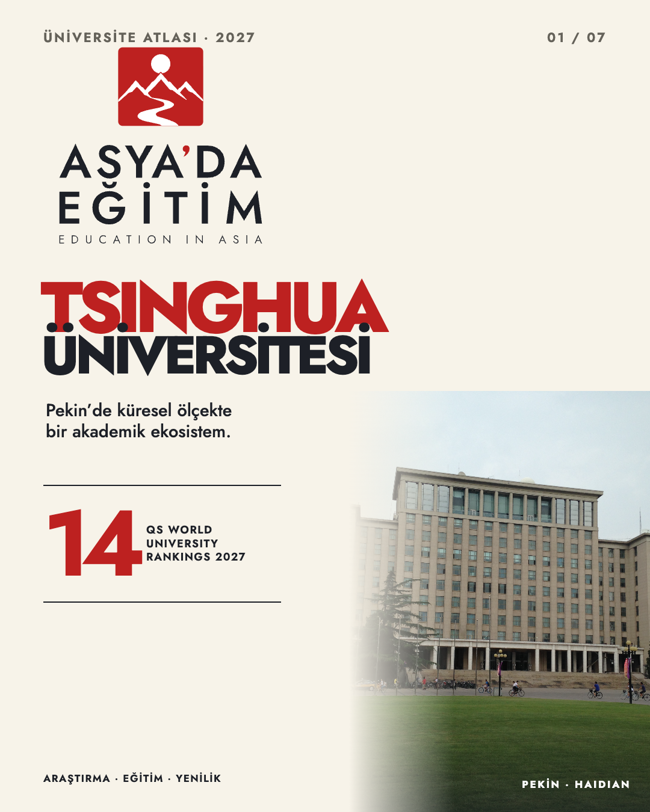
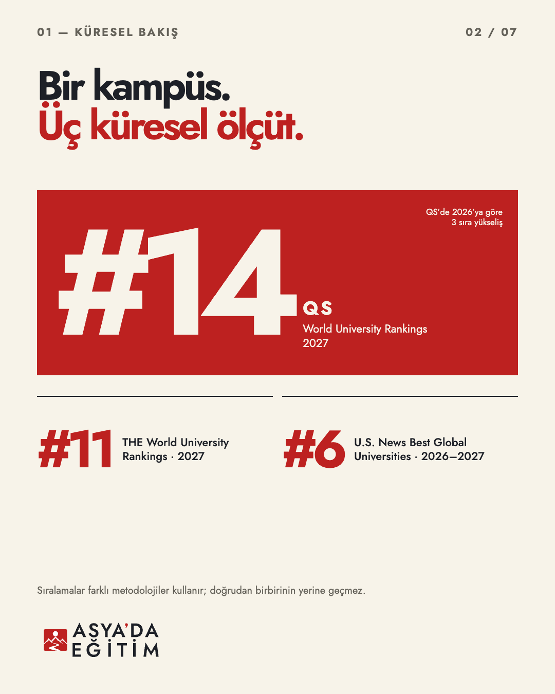
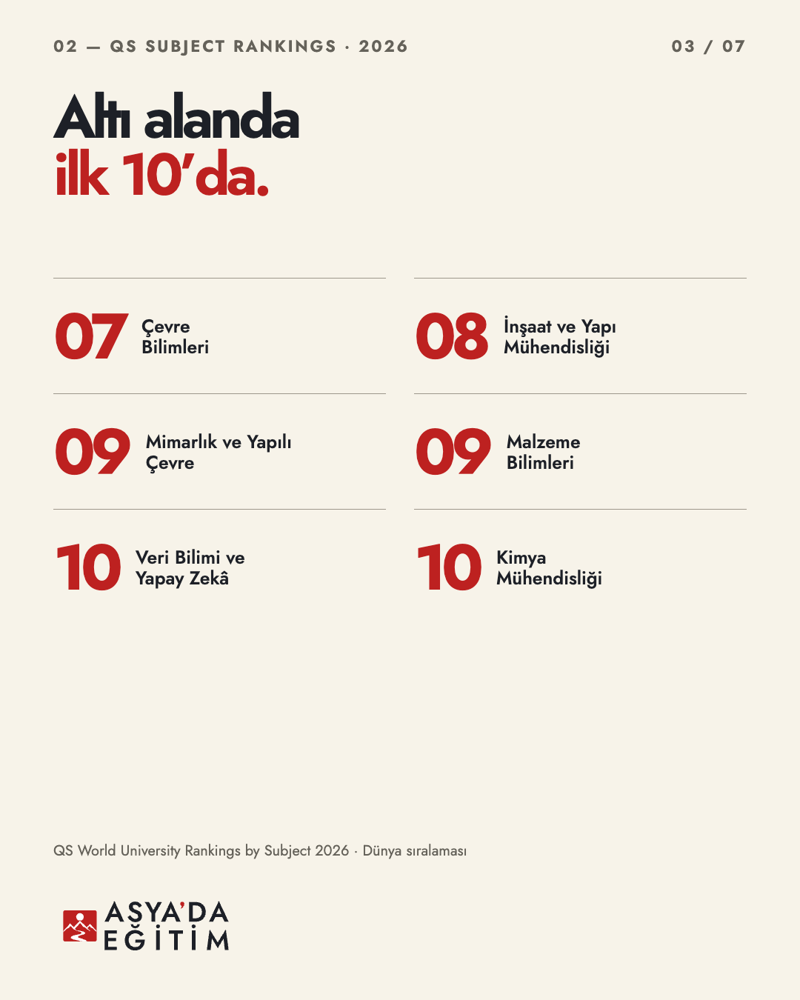
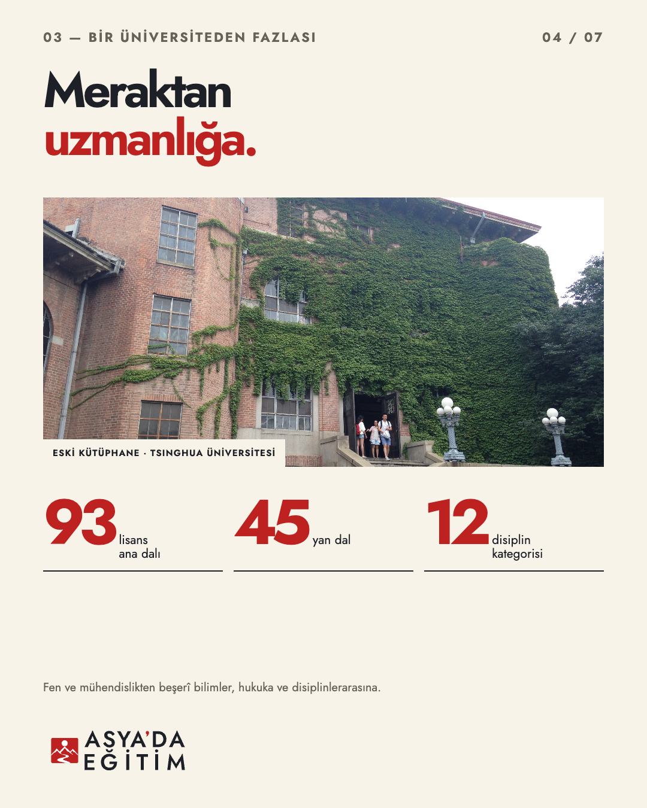
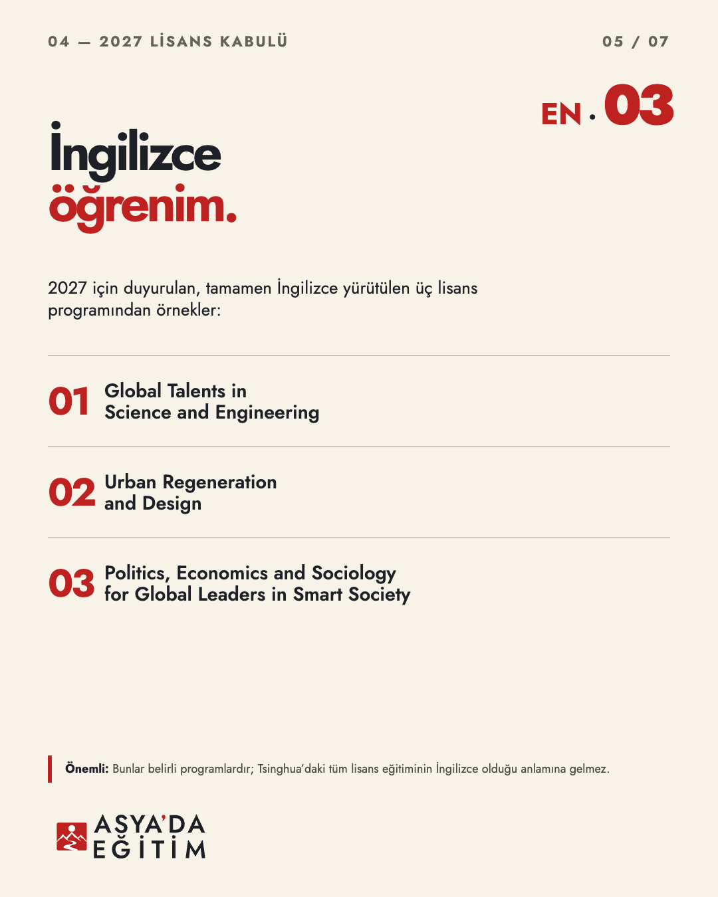
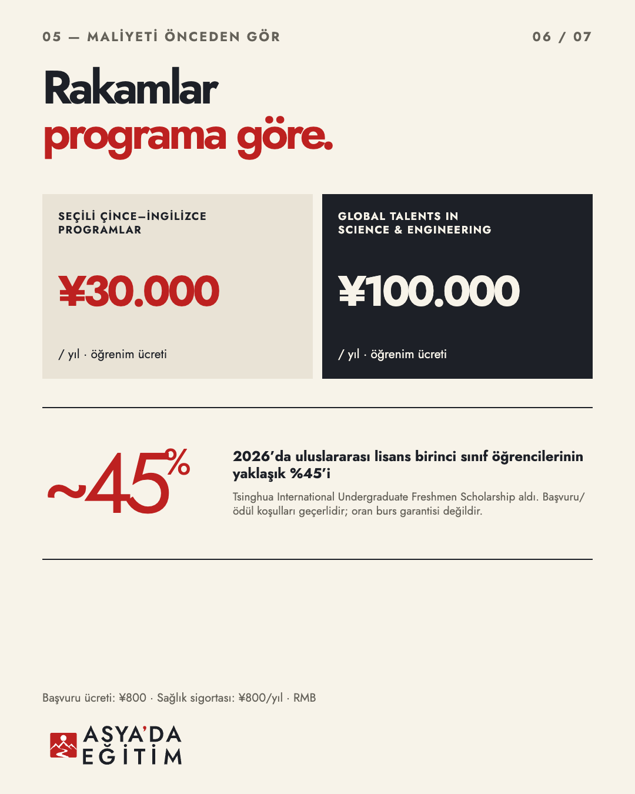
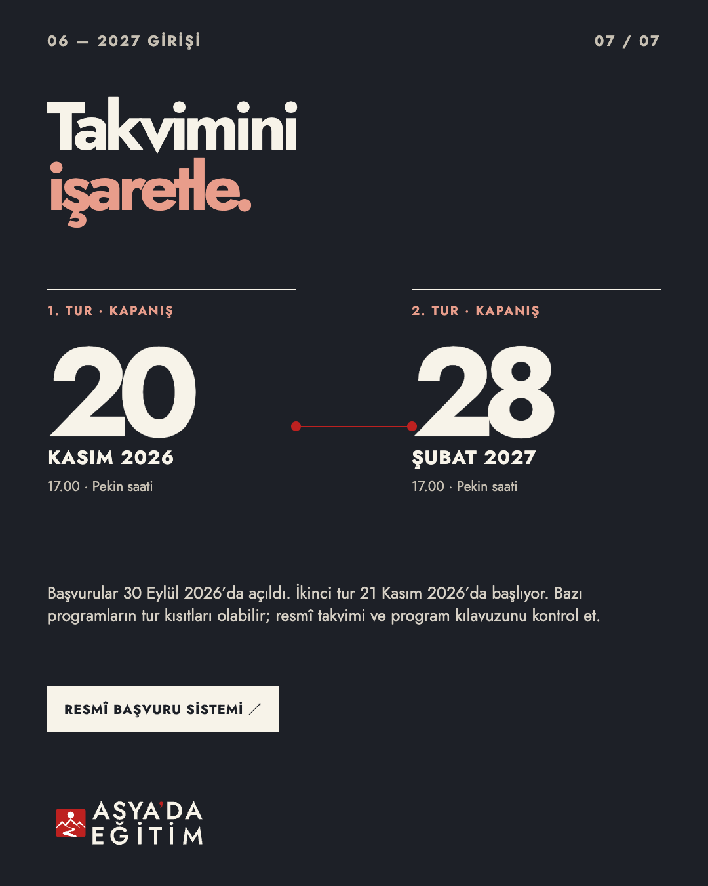

02 · KÜRESEL SIRALAMALAR
Düzenlenebilir HTML kaynağı
03 · ALANLAR
Düzenlenebilir HTML kaynağı
04 · AKADEMİK GENİŞLİK
Düzenlenebilir HTML kaynağı
05 · İNGİLİZCE PROGRAMLAR
Düzenlenebilir HTML kaynağı
06 · ÜCRETLER & BURSLAR
Düzenlenebilir HTML kaynağı